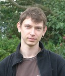

Former Members
Dr Clairice Poon
Former PhD
(Graduated 2015)
Current Position: Lectuturer at the University of Bath
Dr Milana Gataric
Former PhD
(Graduated 2016)
Former Postdoctoral Researcher
Current Position: Postdoctoral Fellow at EMBL's European Bioinformatics Institute

Former PhD
Dr Alexander Jones
Former PhD
(Graduated 2016)
Dr Jonathan Ben-Artzi
Former Postdoctoral Researcher (2011 - 2014)
PhD: Brown University
Current Position: Associate Professor at Cardiff University
Dr Bogdan Roman
Former Postdoctoral Researcher (2013 - 2019)
PhD: University of Cambridge
Dr Priscilla Canizares
Former Postdoctoral Researcher (2015 - 2016)
PhD: Autonomous University of Barcelona

Dr Francesco Renna
Former Postdoctoral Researcher (2016 - 2018)
PhD: University of Padova